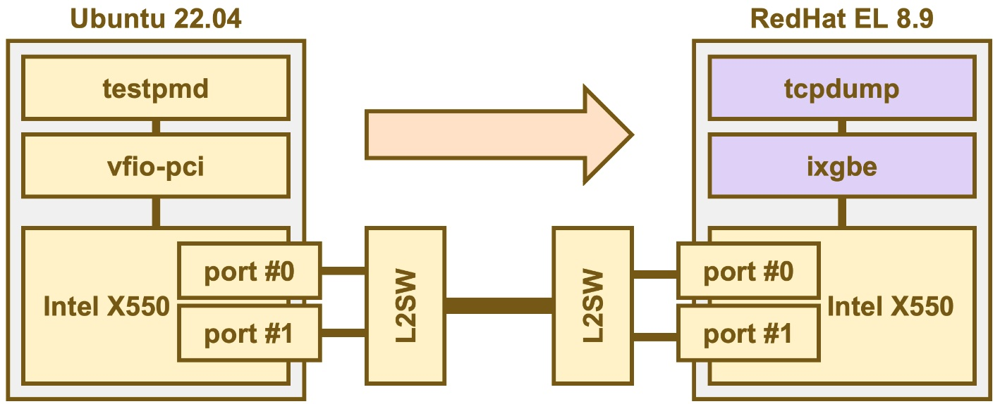

2024/4/28更新
Ubuntu22.04/DPDK22のtestpmdでUDPパケットを送信する
1. はじめに
- 以下の構成でUDP送信をtestpmdで行う手順を解説します。
- 本章では、左側のUbuntu22から送信する手順について解説します。
- ARP手順等を省略した、かなりシンプルなUPD通信となっていますが、物理的に離れた構成での通信ができています。

2. 手順
2.1 HugePageとVFIOの設定
- とりあえず、2MバイトのHugePageを、2048面用意します。
- VFIOをUNSAFE-NOIOMMUモードに設定します。
# echo 2048 > /proc/sys/vm/nr_hugepages
# echo 1 > /sys/module/vfio/parameters/enable_unsafe_noiommu_mode
2.2 ドライバの付け替え
- lspciでNICのデバイスアドレスを確認します。
- 見つけたNICを、
nmcli c downでKernel管理から切り離します。 - vfio-pciドライバを充てます。
- dpdk-devbind.pyで確認します。
# lspci | grep Ethernet
00:1f.6 Ethernet controller: Intel Corporation Ethernet Connection (2) I219-V
01:00.0 Ethernet controller: Intel Corporation Ethernet Controller 10G X550T (rev 01)
01:00.1 Ethernet controller: Intel Corporation Ethernet Controller 10G X550T (rev 01) ←これを使います
02:00.0 Ethernet controller: Intel Corporation 82574L Gigabit Network Connection
# nmcli c down enp1s0f1
# modprobe vfio-pci
# dpdk-devbind.py -b vfio-pci 01:00.1
# dpdk-devbind.py -s
Network devices using DPDK-compatible driver
============================================
0000:01:00.1 'Ethernet Controller 10G X550T 1563' drv=vfio-pci unused=ixgbe,uio_pci_generic
（後略）
2.3 送信先情報の調査
- UDPパケットを送信するには、相手のMACアドレス、IPアドレスが必要です。
- 注：送信先とL2ネットワークで繋がっている前提です。
- 今回のテスト環境では、相手先は、IPアドレス:192.168.2.123、MACアドレス:a0:36:9f:b3:1c:5dとなっています。
enp1s0f1: flags=4163<UP,BROADCAST,RUNNING,MULTICAST> mtu 1500
inet 192.168.2.123 netmask 255.255.255.0 broadcast 192.168.2.255
ether a0:36:9f:b3:1c:5d txqueuelen 1000 (Ethernet)
（後略）
2.4 testpmd起動
testpmdを起動してみます。パラメータの概要は以下となります。
- -a: 使用するNICデバイスのBDFアドレスを指定します。
- --forward-mode=txonly: 送信モードで起動します。
- --tx-ip: 送信元と送信先のIPアドレスを指定します。
- --tx-udp: 送信元と送信先のUDPポート番号を指定します。
- --eth-peer: 送信先のMACアドレスを指定します。
- --stats-period: 送信状況を表示する間隔を指定します。
# dpdk-testpmd -a 0000:01:00.1 -- --forward-mode=txonly --tx-ip=192.168.2.111,192.168.2.123 --tx-udp=5000,5000 --eth-peer=0,a0:36:9f:b3:1c:5d --stats-period 1
- 起動すると、送信が開始され、以下が1秒周期で表示されます
- 「10G NIC」と「2.5GのL2SW」を使用しているのですが、700Mbpsしか出てないようです。UDPのペイロードのデータが非常に小さいからだと思います。あとで、チューニングしてみようと思います。
Port statistics ====================================
######################## NIC statistics for port 0 ########################
RX-packets: 77 RX-missed: 0 RX-bytes: 25588
RX-errors: 0
RX-nombuf: 0
TX-packets: 49730880 TX-errors: 0 TX-bytes: 3182775776
Throughput (since last show)
Rx-pps: 0 Rx-bps: 0
Tx-pps: 1420507 Tx-bps: 727300160
############################################################################
CTRL-Cで終了すると、最終的な統計情報が表示されます。PMDによる「全力送信」なので、ドロップが多くなっています。
---------------------- Forward statistics for port 0 ----------------------
RX-packets: 77 RX-dropped: 0 RX-total: 77
TX-packets: 51152078 TX-dropped: 3250595457 TX-total: 3301747535
----------------------------------------------------------------------------
+++++++++++++++ Accumulated forward statistics for all ports+++++++++++++++
RX-packets: 77 RX-dropped: 0 RX-total: 77
TX-packets: 51152078 TX-dropped: 3250595457 TX-total: 3301747535
++++++++++++++++++++++++++++++++++++++++++++++++++++++++++++++++++++++++++++
Done.
Stopping port 0...
Stopping ports...
Done
- 相手先でtcpdumpを録ってみます。かなり小さいUDPパケットが送られています。
- testpmdのパラメータを変更することで、いろいろなUDPパケットを送信することができます。
14:44:45.081049 IP 192.168.2.111.commplex-main > 192.168.2.123.commplex-main: UDP, length 22
14:44:45.081050 IP 192.168.2.111.commplex-main > 192.168.2.123.commplex-main: UDP, length 22
14:44:45.081050 IP 192.168.2.111.commplex-main > 192.168.2.123.commplex-main: UDP, length 22
14:44:45.081051 IP 192.168.2.111.commplex-main > 192.168.2.123.commplex-main: UDP, length 22
3. 今後
testpmdによる、UDP受信を紹介する予定です。